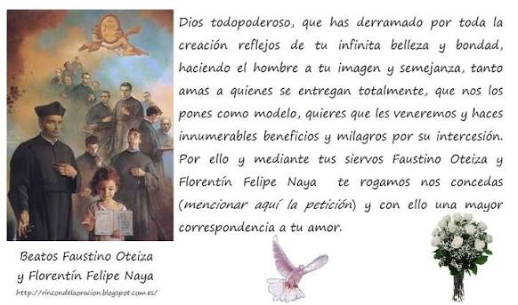

Información
¿Cómo fue su beatificación y qué significa eclestial tiene?
- Tras el fin del conflicto, la Orden recopiló información para el proceso de martirio de los religiosos asesinados.
- La Iglesia Católica reconoció que Florentín merecía ser martirizado
- 1 de octubre de 1995, en Plaza de San Pedro, Ciudad del Vaticano, el Papa San Juan Pablo II proclamó solemnemente beato a Florentín junto a otros como Felipe Oteiza.
- Significado eclestial:ser un buen ejemplo de fidelidad a la fe y servicio a la comunidad

